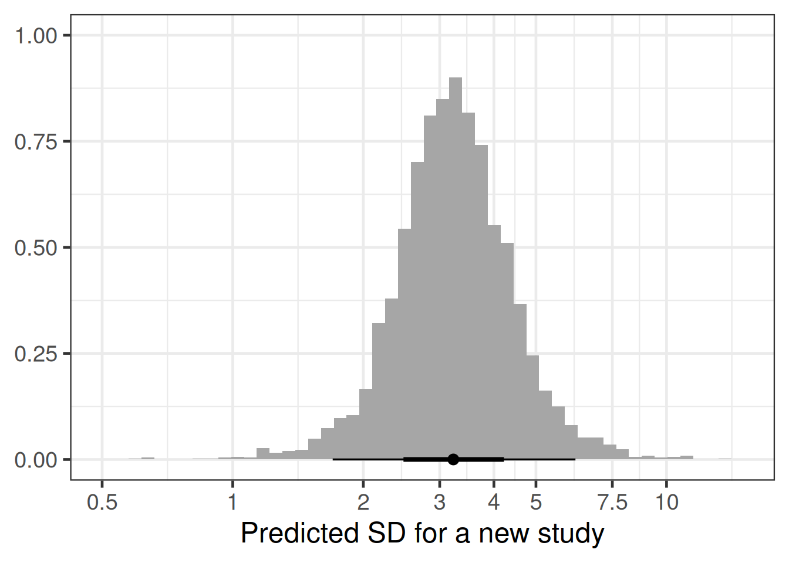
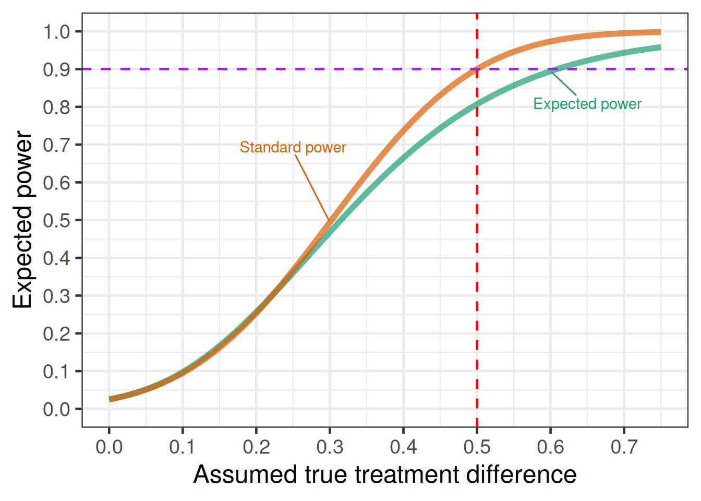
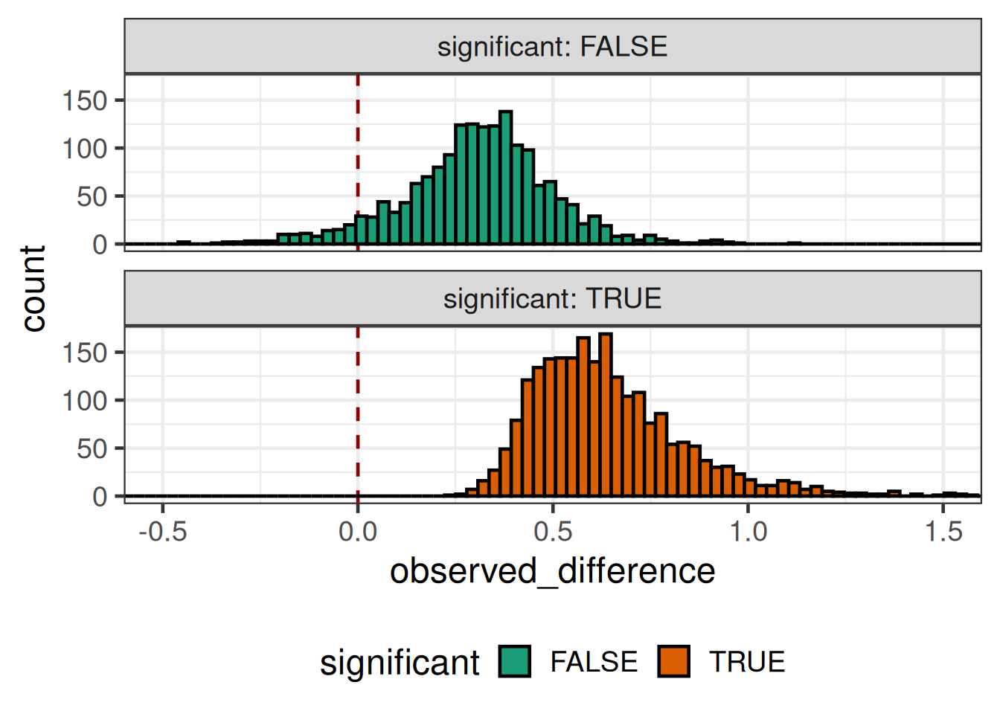
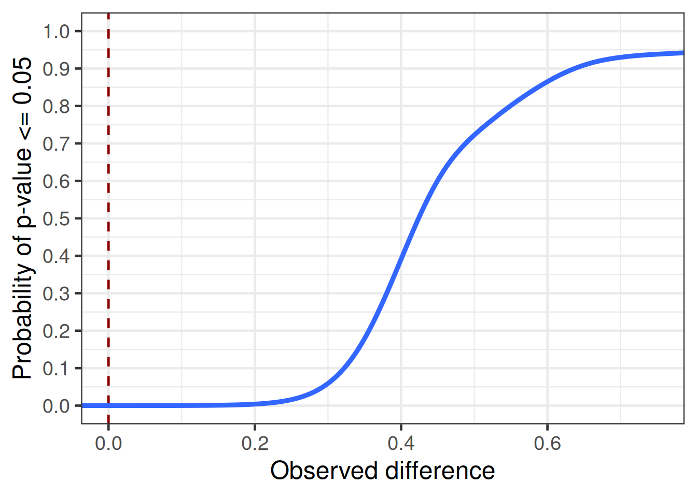

library(tidyverse)
library(brms)
library(posterior)
library(ggrepel)
library(gt)
here::i_am("src/02k_nuisance.qmd")
# instruct brms to use cmdstanr as backend and cache all Stan binaries
options(brms.backend="cmdstanr", cmdstanr_write_stan_file_dir=here::here("brms-cache"))
# create cache directory if not yet available
dir.create(here::here("brms-cache"), FALSE)
set.seed(593467)8 Nuisance parameters, expected power and the “significance threshold”
This case study demonstrates
- application of meta-analysis to the key nuisance parameter of residual standard deviation \sigma
- how to use the
rvarconcept from theposteriorR package to represent and calculate with posterior distributions without the need to handle individual draws.
To run the R code of this section please ensure to load these libraries and options first:
We will also use one dataset provided in the multinma R package.
8.1 Introduction
The power for a randomized controlled clinical trial refers to the probability of achieving a statistically significant difference between treatment groups from a frequentist analysis given assumed fixed values for the true treatment effect of the treatment being tested and for nuisance parameters. Nuisance parameters are parameters we are not truly interested in, but which affect the expected uncertainty about the treatment effect after running the trial. Examples include the residual standard deviation in linear regression, and the placebo event rate and dispersion parameter for count data.
Expected power is the average power we obtain when averaging over the uncertainty for nuisance parameters, but assume a fixed true treatment effect. The closely related concept of assurance(O’Hagan et al. 2005) additionally aims to take the uncertainty about the true treatment effect into account. Both concepts can be valuable and an in-depth look at the topic is offered by a recent book by Grieve (2022). Assurance gives a realistic assessment of the probability that a trial will achieve a statistically significant result given our uncertainty about the treatment effect, but ignoring our uncertainty about nuisance parameters. In contrast, looking at expected power for a given fixed treatment effect has the value that sometimes we may be uncertain about the true treatment effect, but primarily want to ensure an adequate power if the true treatment effect is at least of a meaningful size and do not mind that the power is low otherwise.
Relatedly, we may wish to know how probable it is that we would obtain a statistically significant result conditional on a given observed point estimate for the treatment difference. The point at which this occurs is sometimes called the “significance threshold”. Given that whatever point estimate is observed in the Phase III trial(s) of a development program will enter into the drugs label after approval and will by many be considered as if it were THE true efficacy of the drug, there is some sense in making sure that we achieve statistical significance if and only if a point estimate that would lead to substantial adoption of the drug is observed. This calculation, again, requires prior beliefs about nuisance parameters, but not about the treatment effect. Note also, that there will not usually be a single “significance threshold”, but rather a range of values across which the probability of a statistically significant trial result increases from near zero to near certainty.
8.2 Model
As pointed out e.g. by Schmidli et al. (2017), the sampling distribution of the estimate of the residual variance of an arm in a RCT with n patients follows a \Gamma(\nu/2, \nu/(2 \sigma^2)) distribution, where we would typically use \nu = (n-1) when the residual variance is from a linear model with just a treatment term. If the estimate of the residual variance is from a model with more terms, we would correspondingly subtract degrees of freedom. E.g. if the estimate is from a model that also adjusts for a baseline assessment of the primary variable, we would use \nu = n-2. Note that we use the parameterization of the \Gamma-distribution in terms of a shape and a rate parameter.
We can re-express estimating \sigma^2 as doing gamma-regression with only an intercept term, where we fix the shape parameter to be \nu/2 and model the logarithm of the expectation. Conveniently, \nu/2 no longer features, because the mean of the sampling distribution is given by \frac{\text{shape parameter}}{\text{rate parameter}} = \frac{\nu/2}{\nu/(2 \sigma^2)} = \sigma^2. Thus, we can just use the regression equation \log \text{E}(\text{residual variance estimate}) = \beta_0. Within this framework, we can then look at how estimates of the residual variance for study i vary across studies i=1,\ldots,I by adding a random study effect to the regression equation that vary across studies according to a hierarchical scale parameter \tau. Additionally, we could add other predictor terms to the regression equation, such as whether patients enrolled in a study had mild, moderate or severe disease severity.
There is also an excellent vignette for the RBesT R package for this application, which approximates the distribution of the log-transformed variances with a normal distribution. With brms we can avoid this approximation and gain some additional flexibility, e.g. for adjusting for trial characteristics and when there are multiple observations per trial.
8.3 Data: Parkinson’s disease example
The data we will use is from the supplementary material of Dias et al. (2013) and is provided as part of the multinma R package. The data contains mean off-time reduction data from 7 trials in patients with Parkinson’s disease. Off time refers to the number of hours per day (thus, must be between 0 and 24) when patients experience symptoms. In this data, treatment 1 refers to placebo and treatments 2 to 5 are active drugs.
parkinsons <- multinma::parkinsons |>
mutate(sd = se*sqrt(n),
varestimate = sd^2,
studyn = factor(studyn),
trtn = factor(trtn))
parkinsons |>
gt() |>
tab_footnote("Treatment 1 refers to placebo and treatments 2 to 5 are active drugs.") |>
fmt_number(columns = c("sd", "varestimate"), decimals = 2)| studyn | trtn | y | se | n | diff | se_diff | sd | varestimate |
|---|---|---|---|---|---|---|---|---|
| 1 | 1 | -1.22 | 0.504 | 54 | NA | 0.504 | 3.70 | 13.72 |
| 1 | 3 | -1.53 | 0.439 | 95 | -0.31 | 0.668 | 4.28 | 18.31 |
| 2 | 1 | -0.70 | 0.282 | 172 | NA | 0.282 | 3.70 | 13.68 |
| 2 | 2 | -2.40 | 0.258 | 173 | -1.70 | 0.382 | 3.39 | 11.52 |
| 3 | 1 | -0.30 | 0.505 | 76 | NA | 0.505 | 4.40 | 19.38 |
| 3 | 2 | -2.60 | 0.510 | 71 | -2.30 | 0.718 | 4.30 | 18.47 |
| 3 | 4 | -1.20 | 0.478 | 81 | -0.90 | 0.695 | 4.30 | 18.51 |
| 4 | 3 | -0.24 | 0.265 | 128 | NA | 0.265 | 3.00 | 8.99 |
| 4 | 4 | -0.59 | 0.354 | 72 | -0.35 | 0.442 | 3.00 | 9.02 |
| 5 | 3 | -0.73 | 0.335 | 80 | NA | 0.335 | 3.00 | 8.98 |
| 5 | 4 | -0.18 | 0.442 | 46 | 0.55 | 0.555 | 3.00 | 8.99 |
| 6 | 4 | -2.20 | 0.197 | 137 | NA | 0.197 | 2.31 | 5.32 |
| 6 | 5 | -2.50 | 0.190 | 131 | -0.30 | 0.274 | 2.17 | 4.73 |
| 7 | 4 | -1.80 | 0.200 | 154 | NA | 0.200 | 2.48 | 6.16 |
| 7 | 5 | -2.10 | 0.250 | 143 | -0.30 | 0.320 | 2.99 | 8.94 |
| Treatment 1 refers to placebo and treatments 2 to 5 are active drugs. | ||||||||
8.4 Implementation
8.4.1 brms model code
We can implement the model described in the preceding section using the code below.
model_var <- bf(
varestimate ~ 1 + (1 | studyn),
shape ~ 0 + offset((n - 1) / 2),
family = brmsfamily(family = "Gamma", link = "log", link_shape = "identity")
)
prior_var <- prior(student_t(3, 4, 2.0), class = Intercept) +
prior(normal(0, 1), class = sd)
(brmfit <- brm(
model_var,
prior = prior_var,
data = parkinsons,
refresh = 0,
seed = 3568587,
control = list(adapt_delta = 0.9)
))make[2]: warning: jobserver unavailable: using -j1. Add '+' to parent make rule.Start samplingRunning MCMC with 4 sequential chains...
Chain 1 finished in 0.8 seconds.
Chain 2 finished in 0.9 seconds.
Chain 3 finished in 0.8 seconds.
Chain 4 finished in 0.8 seconds.
All 4 chains finished successfully.
Mean chain execution time: 0.8 seconds.
Total execution time: 4.0 seconds. Family: gamma
Links: mu = log; shape = identity
Formula: varestimate ~ 1 + (1 | studyn)
shape ~ 0 + offset((n - 1)/2)
Data: parkinsons (Number of observations: 15)
Draws: 4 chains, each with iter = 2000; warmup = 1000; thin = 1;
total post-warmup draws = 4000
Multilevel Hyperparameters:
~studyn (Number of levels: 7)
Estimate Est.Error l-95% CI u-95% CI Rhat Bulk_ESS Tail_ESS
sd(Intercept) 0.55 0.19 0.30 1.04 1.00 688 863
Regression Coefficients:
Estimate Est.Error l-95% CI u-95% CI Rhat Bulk_ESS Tail_ESS
Intercept 2.34 0.23 1.84 2.80 1.01 546 533
Draws were sampled using sample(hmc). For each parameter, Bulk_ESS
and Tail_ESS are effective sample size measures, and Rhat is the potential
scale reduction factor on split chains (at convergence, Rhat = 1).Note the use of bf() (short for brmsformula()) to combine our model for the logarithm of the expectation, as well as the “model” for the shape parameter (the “model” here is just an offset and no model terms). We specify the log-link for the expectation and an identity link the shape (but we could also have used a log-link, if we had written offset(log(nu/2))).
8.4.2 Choice of prior distributions for the example
For setting the prior on the intercept of the model, we considered the likely distribution of the parameter of interest. Since patients enrolled in a clinical trials would be symptomatic, we would expect them to have a few hours of off-time (let’s say 3 to 8 or so), but certainly at least 1 hour. If we assume that off-time is like a negative binomial count of hours with a mean rate of \mu and dispersion parameter \kappa, then the variance would be \mu + \kappa \mu^2 with values of \kappa of, say, 1 to 10. The within study change in off time additional performs a subtraction between two highly correlated quantities of this type (i.e. a patient’s post-baseline and baseline off-time), but very roughly this will not change the order of magnitude of the variance of the variable. So, we would have a quite uncertain prior for the log of the variance centered on, say, \log(5 + 2 \times 5^2) \approx 4 that needs to be broad enough to still some prior mass at \log(1 + 0 \times 1^2) = 0 and \log(24 + 10 \times 24^2) \approx 8.7.
For the prior on the hierachical scale parameter, we assume that the population in one study could have very similar off-times or might perhaps have twice (or half) the off-time of another study. So, very low values up to \log(2) \approx = 0.69 are quite plausible, perhaps still \log(4) \approx=1.39. However, it seems implausible that one study will have 10-times (or 1/10th) of the values of another study, so \log(10) \approx 2.3 is already a very unlikely value for the scale parameter. A \text{half-normal}(0, 1) distribution is somewhat vaguer than that.
8.4.3 Predicting the variance for a new study
When we predict the variance in a new study for sample size purposes, we of course do not want to predict the estimated variance we might observe for a given sample size, which we would obtain using predict. Instead, we want to predict the true variance in a new study without within-study sampling variability. We can do so using the posterior_epred function, but need to supply it a value for nu in the new data (as we would otherwise get an error message, even though \nu is not actually used for the predictions). Note also that we need to make sure to use a study identifier not used in the training data of our model, if we wish to predict for a new study.
# Take sqrt to get the SD and note that we select the first column of
# the returned matrix of draws which we convert to an rvar object
# (defined in the posterior package)
rv_predicted_sigma <- rvar(sqrt(posterior_epred(
brmfit,
newdata = tibble(n = 2, study = 6L),
allow_new_levels = TRUE,
sample_new_levels = "gaussian"
)[, 1]))8.5 Results
Here are the percentiles of the predictive distribution of the standard deviation in a new study:
summary(
rv_predicted_sigma,
~ quantile2(.x, probs = c(0.025, 0.25, 0.5, 0.75, 0.975))
)# A tibble: 1 × 6
variable q2.5 q25 q50 q75 q97.5
<chr> <dbl> <dbl> <dbl> <dbl> <dbl>
1 rv_predicted_sigma 1.70 2.68 3.23 3.88 6.17Similarly, the histogram with a log-x-scale is:
tibble(predsd = rv_predicted_sigma) |>
ggplot(aes(xdist = predsd)) +
ggdist::stat_histinterval() +
scale_x_log10(
breaks = c(0.5, 1, 2, 3, 4, 5, 7.5, 10, 20),
labels = c(0.5, 1, 2, 3, 4, 5, 7.5, 10, 20)
) +
xlab("Predicted SD for a new study") +
ylab(NULL) +
coord_cartesian(xlim = c(0.5, 15))
Let’s say we are looking at taking into account uncertainty about the standard deviation in the following sample size calculation, where we originally just assumed a fixed standard deviation of 3.
# get power of trial for given delta and sigma
trial_power <- function(delta, sigma) {
power.t.test(
n = 758,
delta = delta,
sd = sigma,
sig.level = 0.025,
power = NULL,
type = "two.sample",
alternative = "one.sided",
strict = FALSE
)$power
}
(standard_power <- trial_power(delta=0.5, sigma=3))[1] 0.9001893Taking the uncertainty around the standard deviation into account, we get an expected power below closer to 80% instead of the original 90%.
# enable trial_power function to have sigma be an rvar argument
rv_trial_power <- rfun(trial_power, "sigma")
rv_trial_power(0.5, rv_predicted_sigma)rvar<4000>[1] mean ± sd:
[1] 0.81 ± 0.18 # an alternative is to call rdo, which does detect any rvar variable
# and loops the expression accordingly
rdo(trial_power(0.5, rv_predicted_sigma))rvar<4000>[1] mean ± sd:
[1] 0.81 ± 0.18 Or, to show the expected power as a function of the assumed true effect size \delta:
Show the code
# for different delta values obtain power with and without uncertainty
# in sigma
power_cases <- tibble(delta = seq(0, 0.75, 0.01)) |>
rowwise() |>
mutate(
expected = E(rv_trial_power(delta, rv_predicted_sigma)),
standard = trial_power(delta, 3)
) |>
ungroup()
# reshape data for plotting
power_cases <- power_cases |>
pivot_longer(
cols = -delta,
names_to = "variable",
values_to = "power"
) |>
mutate(
variable = factor(
variable,
c("expected", "standard"),
c("Expected power", "Standard power")
)
)
ggplot(
power_cases,
aes(x = delta, y = power, col = variable, label = variable)
) +
geom_line(size = 2, alpha = 0.7) +
scale_y_continuous(limits = c(0, 1), breaks = seq(0, 1, by = 0.1)) +
scale_x_continuous(breaks = seq(0, 0.75, 0.1)) +
geom_vline(xintercept = 0.5, col = "red", linetype = 2) +
geom_hline(yintercept = standard_power, col = "purple", linetype = 2) +
xlab("Assumed true treatment difference") +
ylab("Expected power") +
geom_text_repel(
data = filter(
power_cases,
(variable == "Expected power" & delta == 0.6) |
(variable == "Standard power" & delta == 0.3)
),
nudge_x = c(-0.05, 0.05),
nudge_y = c(0.2, -0.085)
)
Even if we assume a fixed true treatment difference of 0.5, for the significance threshold we still need to also take into account the sampling distribution of the observed treatment difference and observed sample variance. These happen to be independent in the normal distribution case, but not generally for other distributions.
simulated_outcomes <- tibble(predsd = rv_predicted_sigma, n = 758) |>
mutate(
predvar = predsd^2,
npergroup = n / 2,
observed_difference = rvar_rng(
rnorm,
1,
mean = 0.5,
sd = sqrt(predvar / npergroup + predvar / npergroup)
),
sample_variance = rvar_rng(
rgamma,
1,
shape = 0.5 * (n - 2),
rate = 0.5 * (n - 2) / predvar
),
tstatistic = observed_difference /
(sqrt(sample_variance) * sqrt(1 / npergroup + 1 / npergroup)),
pvalue = 1 - rdo(pt(tstatistic, df = n - 2)),
significant = pvalue <= 0.025
) |>
# below we visualize differently depending
# on the value of significant such that it
# is easier here to work with each draw
tidybayes::unnest_rvars()
# we can undo the rvar unnesting with
# tidybayes::nest_rvars(simulated_outcomes)
simulated_outcomes |>
ggplot(aes(x = observed_difference, fill = significant)) +
geom_vline(xintercept = 0, col = "darkred", linetype = 2) +
geom_histogram(bins = 100, col = "black") +
theme(legend.position = "bottom") +
facet_wrap(~significant, labeller = label_both, nrow = 2) +
coord_cartesian(xlim = c(-0.5, 1.5))
simulated_outcomes |>
mutate(significant = 1L * (pvalue <= 0.025)) |>
ggplot(aes(x = observed_difference, y = significant)) +
geom_vline(xintercept = 0, col = "darkred", linetype = 2) +
geom_smooth(
n = 1000, # large number of evaluation points to smoothly plot curve
method = "gam",
method.args = list(family = binomial(link = "logit"), bs = "cr"),
se = FALSE
) +
xlab("Observed difference") +
ylab("Probability of p-value <= 0.05") +
scale_y_continuous(breaks = seq(0, 1, 0.1), limits = c(0, 1)) +
coord_cartesian(xlim = c(0, 0.75))`geom_smooth()` using formula = 'y ~ s(x, bs = "cs")'
8.6 Conclusion
There is usually still a non-negligible degree of uncertainty about nuisance parameters, even if several previous studies are available. This tends to have the effect that instead of, say, 90% power, we will have a lower expected power. This in combination with sampling variation results in greater uncertainty about the observed effect size with which the study would become significant (aka the “significance threshold”) than one would naively expect.
However, note that when evaluating the probability of success of a trial, it is not just the uncertainty about nuisance parameters that we need to consider, but even more importantly our uncertainty about the true treatment effect for the trial population. Once we combine these two uncertainties, we get a realistic picture of the trial probabiltiy of success. It is important to note that this will routinely be much lower than the power stated in a trial protocol. It is a common trap to think that trials designed for 90% power have a 90% probability to be successful (in the sense of $p ). This number will commonly be in the 40 to 70% range.
8.7 Excercises
Predict the standard deviation for HbA1c in a new study with a blood glucose lowering drug in diabetes patients based on the data provided by Senn et al. (2013).
Show the code
Senn2013 <- read_delim(
"Study n Treatment Comment mean_final SD_final
De_Fronzo_(1995) 213 metformin Change -1.700 1.459
De_Fronzo_(1995) 209 placebo Change 0.200 1.446
Lewin_(2007) 431 metformin Change -0.740 1.106
Lewin_(2007) 144 placebo Change 0.080 1.004
Willms_(1999) 29 metformin Change -2.500 0.862
Willms_(1999) 31 acarbose Change -2.300 1.782
Willms_(1999) 29 placebo Change -1.300 1.831
Davidson_(2007) 117 rosiglitazone Change -1.200 1.097
Davidson_(2007) 116 placebo Change 0.140 1.093
Wolffenbuttel_(1999) 183 rosiglitazone Change -0.900 1.100
Wolffenbuttel_(1999) 192 placebo Change 0.200 1.110
Kipnes_(2001) 182 pioglitazone Change -1.200 1.369
Kipnes_(2001) 181 placebo Change 0.100 1.024
Kerenyi_(2004) 160 rosiglitazone Change -0.910 0.990
Kerenyi_(2004) 154 placebo Change -0.140 0.920
Hanefeld_(2004) 319 pioglitazone Raw 7.610 1.072
Hanefeld_(2004) 320 metformin Raw 7.450 1.073
Derosa_(2004) 45 pioglitazone Raw 6.800 0.800
Derosa_(2004) 42 rosiglitazone Raw 6.700 0.900
Baksi_(2004) 218 rosiglitazone Change -1.200 1.112
Baksi_(2004) 233 placebo Change 0.100 1.036
Rosenstock_(2008) 59 rosiglitazone Change -1.170 1.229
Rosenstock_(2008) 57 placebo Change -0.080 1.208
Zhu_(2003) 210 rosiglitazone Change -1.900 1.470
Zhu_(2003) 105 placebo Change -0.400 1.300
Yang_(2003) 102 rosiglitazone Change -1.090 1.650
Yang_(2003) 96 metformin Change -0.950 1.500
Vongthavaravat_(2002) 164 rosiglitazone Change -1.100 1.559
Vongthavaravat_(2002) 170 SUalone Change 0.100 0.992
Oyama_(2008) 41 acarbose Change -0.700 0.800
Oyama_(2008) 43 SUalone Change -0.300 0.600
Costa_(1997) 36 acarbose Change -1.100 0.360
Costa_(1997) 29 placebo Change -0.300 0.700
Hermansen_(2007) 106 sitagliptin Change -0.300 0.940
Hermansen_(2007) 106 placebo Change 0.270 0.940
Garber_(2008) 132 vildagliptin Change -0.630 1.034
Garber_(2008) 144 placebo Change 0.070 1.080
Alex_(1998) 291 metformin Change 0.130 1.428
Alex_(1998) 300 SUalone Change 0.500 1.450
Johnston_(1994) 68 miglitol Change -0.410 1.072
Johnston_(1994) 63 placebo Change 0.330 1.032
Johnston_(1998a) 91 miglitol Change -0.430 0.954
Johnston_(1998a) 43 placebo Change 0.980 1.311
Kim_(2007) 57 rosiglitazone Change -1.100 1.341
Kim_(2007) 56 metformin Change -1.100 1.139
Johnston_(1998b) 49 miglitol Change -0.120 1.400
Johnston_(1998b) 34 placebo Change 0.560 1.166
Gonzalez-Ortiz_(2004) 34 metformin Change -1.300 1.861
Gonzalez-Ortiz_(2004) 37 placebo Change -0.900 1.803
Stucci_(1996) 28 benfluorex Raw 8.030 1.290
Stucci_(1996) 30 placebo Raw 8.260 1.350
Moulin_(2006) 161 benfluorex Change -0.820 1.028
Moulin_(2006) 156 placebo Change 0.190 1.374",
delim=" ", col_types="ciccdd") |>
mutate(Study = str_replace_all(Study, "_", " "))Warning: The `file` argument of `read_delim()` should use `I()` for literal data as of readr 2.2.0.
# Bad (for example):
read_csv("x,y\n1,2")
# Good:
read_csv(I("x,y\n1,2"))How does the required sample size change for an expected power of 90% vs. a standard power of 90% to achieve a statistically significant difference to placebo in a 1:1 randomized RCT assuming the true difference between groups is 0.7 and that the SD is 1.1, if we switch to expected power taking into account the uncertainty about the standard deviation?